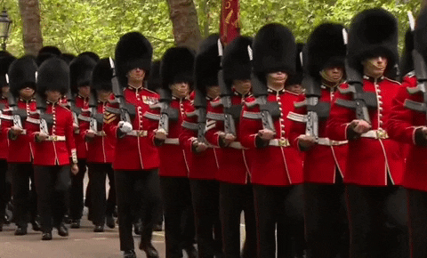
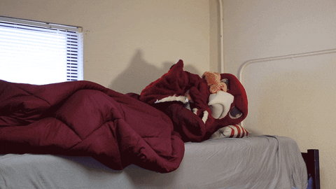
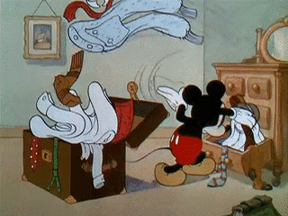

Prepare-se para um Intercâmbio
-
Estude inglês:
A língua inglesa é um dos idiomas mais falados do mundo. E saber se comunicar será necessário. Estude coisas que usamos no nosso cotidiano, prátique bastante a fala, escrita, melhore o seu vocabulário. Fale sem medo de errar, se errar não desista, todos nós erramos. E sempre que não entender peça para repetir o que a pessoa disse.
Existem várias maneiras de melhorar o seu inglês atualmente, faça da maneira que você mais aprenda, clique nos tópicos a seguir:

-
Cultura local:
Pesquise sobre a cultura local do seu país de destino, feriados, o que eles comemoram, comida, como é o clima. São fatores que irão te ajudar a saber mais sobre o país que irá fazer intercâmbio, até mesmo ajudar a preparar a mala com as roupas adequadas.
 -
Planeje-se financeiramente:
Se planejar financeiramente é muito importante. Você precisa pensar tanto nas passagens de avião quanto na moradia, e alimentação caso ficar em um dormitório sozinho. Fique ligado na mensalidade da escola ou faculdade. Levar dinheiro extra para fazer compras, para comprar lembrancinhas.
-
Procure informações de sua escola ou univerdade:
Entre em contato com a sua escola ou faculdade para mais informações, como regras, horários, se é obrigatório o uso de uniforme, fique antenado no que está acontecento, como eventos.
-
Procure informações de sua host family ou dormitório:
Antes da viagem certifique-se onde você vai ficar, veja a localização de sua moradia. Possívelmente a escola irá te enviar um email sobre as informações de sua host family.
 -
Preparando a mala:
Quando estiver preparando sua mala, certifique-se de olhar as regras da empresa aéria que você comprou as passagens. Existem algumas medidas e peso que não podem ultrapassa-los. Você pode levar uma mochila, uma mala de mão e uma de despacho. Não coloque eletrônicos, carregadores e baterias na mala de despacho. Coloque seu passaporte e documentos em um lugar acessível. E líquidos acima de 100ml devem ser colocados na mala de despacho.
 -
Aeroporto:
Chegue mais cedo ao aeroporto para fazer o check-in e verificar o portão de embarque. Fique atento a todas as informações do voo, como possíveis cancelamentos ou atrasos.Tenha seus documentos e passagens sempre à mão, seja em papel ou digital. Compre um lanche ou leve algo de casa, já que as opções no aeroporto costumam ser caras.
Leve algo para se distrair enquanto aguarda, como um livro, música ou filme. Use aplicativos da companhia aérea para acompanhar atualizações do voo em tempo real. Se tiver voos de conexão, confira o tempo disponível entre eles e a localização dos portões.